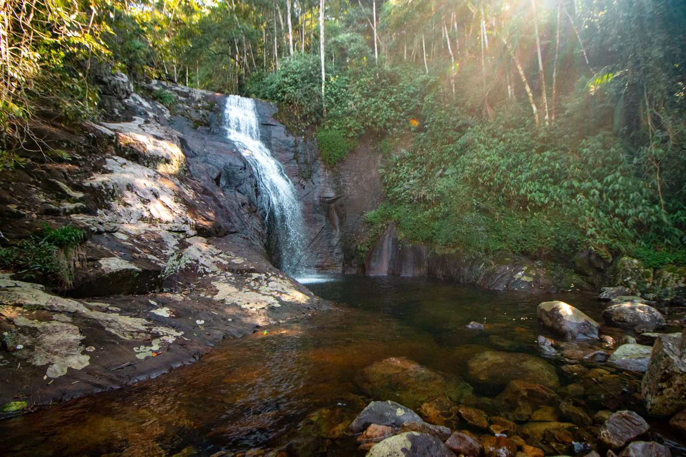
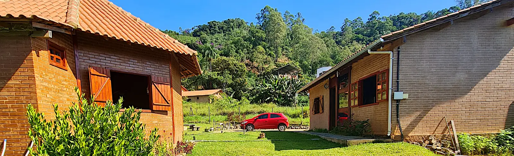

A 600 m da Casa do Chapéu
Cachoeira da Vó Tuti
Fácil acesso, estrutura completa com bar, restaurante, camping e glamping — boa opção para passar o dia com a família.

Patrimônio da Penha · Caparaó · ES
A Casa do Chapéu fica literalmente em cima da trilha das cachoeiras de Patrimônio da Penha — nove quedas d'água em um único caminho, começando na guarita de entrada.
A trilha principal
A sequência de quedas d'água subindo a trilha, na ordem em que você encontra cada uma.
O primeiro ponto da trilha, logo na entrada, sinalizado.
Pouco depois do Beija-Flor, seguindo o caminho que margeia o rio.
Trecho mais rústico da trilha, com apoio em galhos em alguns pontos.
A poucos minutos da hospedagem. Três poços pequenos com cascatas, e um poço maior para banho pela bifurcação da esquerda.
Mais uma queda d'água na sequência, subindo o curso do rio.
A cerca de 250 metros da Casa do Chapéu.
Segue na trilha, já na parte mais alta do percurso.
Penúltimo ponto antes do fim da trilha.
Ponto final da trilha das cachoeiras.
Banho proibido na Captação — é o ponto de onde a vila capta água. Uma pequena trilha à direita, atravessando a ponte sobre o Poço da Captação, leva ao Portal do Céu.
Se quiser esticar o passeio
A 600 m da Casa do Chapéu
Fácil acesso, estrutura completa com bar, restaurante, camping e glamping — boa opção para passar o dia com a família.
A cerca de 10 km
Fácil acesso, com estacionamento. Entrada em torno de R$10 (valor pode variar). Leve água e um lanche.
A cerca de 10 km
Outra opção pertinho do Granito, para quem quiser conhecer mais de uma cachoeira no mesmo passeio.
Entre 25 e 27 km
Ótima para quem tem o dia livre. Perto fica a Tecnotruta, restaurante especializado em pratos de truta.

Consulte a disponibilidade das Cabanas Lua e Estrela e reserve em minutos, direto com a gente.